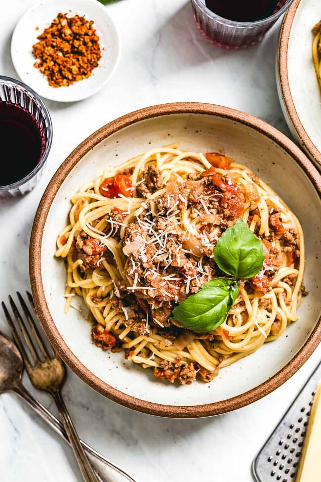

Spaghetti Bolognese

Description
A delicious hearty recipe for easy spaghetti bolognese! This recipe is taken from Food Network
Ingredients
- 1 tablespoon olive oil
- 4 ounces bacon or pancetta, diced
- 1 1/2 cups chopped yellow onions
- 3/4 cups diced carrots
- 3/4 cups diced celery
- 1 tabelspoon minced garlic
- 1 teaspoon salt
- 1/2 teaspoon ground black pepper
- 2 bay leaves
- 1/2 teaspoon dried thyme
- 1/4 teaspoon dried oregano
- 1/2 teaspoon ground cinnamon
- 1/2 teaspoon ground nutmeg
- 1 pound ground beef or ground veal
- 1/2 pound pork sausage, removed from the casings, or ground pork
- 2 tablespoons tomato paste
- 1 cup red wine
- 2 (14 1/2-ounce) cans crushed tomatoes and their juice
- 1 (14 1/2-ounce) can tomato sauce
- 1 cup beef or chicken stock or broth
- 2 teaspoons sugar
- 1/4 cup heavy cream
- 2 tablespoons unsalted butter
- 3 tablespoons chopped fresh parsley leaves
- 1 pound spaghetti
- 1 cup freshly grated Parmesan
Steps
- In a large pot, heat the oil over medium-high heat. Add the bacon and cook, stirring, until browned and the fat is rendered, 4 to 5 minutes. Add the onions, carrots and celery and cook, stirring, until soft, 4 to 5 minutes. Add the garlic, salt, pepper, bay leaves, thyme, oregano, cinnamon, and nutmeg and cook, stirring, for 30 seconds. Add the beef and sausages, and cook, stirring, until no longer pink, about 5 minutes. Add the tomato paste and cook, stirring, for 1 to 2 minutes. Add the wine and cook, stirring, to deglaze the pan and remove any browned bits sticking to the bottom of the pan, and until half of the liquid is evaporated, about 2 minutes.
- Add the tomatoes and their juices, the tomato sauce, beef broth, and sugar and bring to a boil. Reduce the heat to medium-low and simmer, stirring occasionally, to keep the sauce from sticking to the bottom of the pan, until the sauce is thickened and flavorful, about 1 1/2 hours. Add the cream, butter, and parsley, stir well, and simmer for 2 minutes. Discard the bay leaves and adjust the seasoning, to taste. Remove from the heat and cover to keep warm until ready to serve.
- Meanwhile, bring a large pot of salted water to a boil. Add the pasta and return the water to a low boil. Cook, stirring occasionally to prevent the noodles from sticking, until al dente, 8 to 10 minutes. Drain in a colander.
- Add the pasta to the sauce, tossing to coat. Add 1/2 cup of the cheese and toss to blend. Divide among pasta bowls and serve with the cheese passed tableside. (Alternatively, toss only the desired portion of pasta with a bit of the sauce at a time in a serving bowl, reserving the remainder for another meal.)
Return to main page